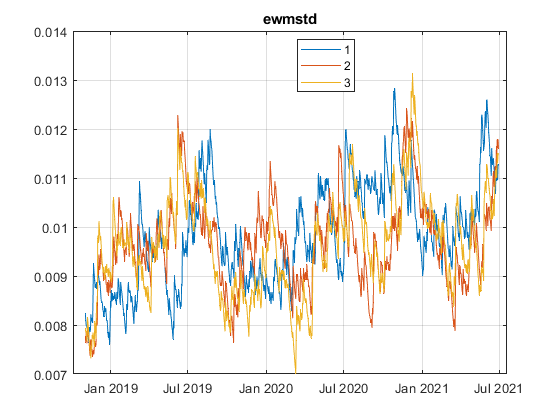

Frames package
The frames package contains a class to store and do operations on data matrices that are referenced by column and index identifiers.
Matlab currently provide matrices and tables, but they do not work well together:
- Matlab native matrices are not aware of row and column names; when data represents observations of variables, it is always tricky to make sure the data is not misaligned (i.e. how to make sure that the ith row in matrices A and B represents the same observation).
- Matlab (time)tables have row and column names, but do not provide simple operations like addition (table1+table2 is not possible).
Frames aims at being both a table and a matrix, allowing matrix operations while being aware of row and column names.
The package currently requires a version of Matlab R2021a or later.
Author: Benjamin Gaudin
Email: frames.matlab@gmail.com
Contents
Frame classes
The class DataFrame and its child class TimeFrame provide a data type suitable when working with matrices that have column and row names. They make operations on and between Frames simple and robust. The distinction between the two is similar to that between Matlab native table and timetable; basically, the properties and methods are the same, but there are a few additional tools to handle time series in TimeFrame.
The main properties of these classes are:
- data: TxN, data matrix
- index: Tx1
- columns: 1xN
- t: dependent table built on the properties above.
The Frames are displayed as a table (DataFrame) or as a timetable (TimeFrame).
For the documentation, run
doc frames.DataFrame doc frames.TimeFrame
Constructor
Construct a Frame as follows:
df = frames.DataFrame([data,index,columns,Name=name,RowSeries=logical,ColSeries=logical])
% Example: df = frames.DataFrame([1 2;3 4],[1 2],["col1","col2"])
df =
col1 col2
____ ____
1 1 2
2 3 4
or with a TimeFrame
tf = frames.TimeFrame([1 2;3 4],[738336,738337],["ts1","ts2"])
tf =
Time ts1 ts2
___________ ___ ___
29-Jun-2021 1 2
30-Jun-2021 3 4
To view the properties of the object, type
details(df)
2×2 frames.DataFrame array with properties:
data: [2×2 double]
index: [2×1 double]
columns: ["col1" "col2"]
name: ""
t: [2×2 table]
rowseries: 0
colseries: 0
identifierProperties: [1×1 struct]
description: ""
One can see the properties we have just set in the constructor. The other properties (some of which can be set in the constructor with named arguments) are presented further below.
Properties Access and Modification
The properties can be accessed simply by
df.data df.columns
ans =
1 2
3 4
ans =
1×2 string array
"col1" "col2"
They can also be modified
df.data(1,1) = 10; df.columns = ["a","b"]
df =
a b
__ _
1 10 2
2 3 4
Frame will throw an error if the data entered are not coherent, e.g. the size is the matching the rest of the data:
try df.columns = ["a","b","c"] catch me disp(me.message) end
columns do not have the same size as data
Or an example with an attempt to assign a duplicate index:
try df.index = [1 1] catch me disp(me.message) end
Index value is required to be unique.
Sub-Frame Access and Modification
Select and modify based on index/column names with () or the loc method: * df(indexNames,columnsNames) * df.loc(indexNames,columnsNames) * df(indexNames,columnsNames) = newData * df.loc(indexNames,columnsNames) = newData
% Selection df(1,:) % same as df.loc(1,:); df(1); df.loc(1);
ans =
a b
__ _
1 10 2
Modification
df(1,:) = 11
% Or df.loc(1,:) = 11
df =
a b
__ __
1 11 11
2 3 4
One can also drop a column/row with the empty assignment
tmp = df;
tmp(:,"b") = []
tmp =
a
__
1 11
2 3
Select and modify based on position with {} or the iloc method:
* df{indexPosition,columnsPosition}
* df.iloc(indexPosition,columnsPosition)
* df{indexPosition,columnsPosition} = newData
* df.iloc(indexPosition,columnsPosition) = newDatadf{1:end,2}
% same as
df{:,2};
df.iloc(:,2);
ans =
b
__
1 11
2 4
df{2,1} = 20
% or df.iloc(2,1) = 20
df =
a b
__ __
1 11 11
2 20 4
df.data = [1 2;3 4]; % reset data to original example
Operations
Frames can be used like matrices for operations.
element-wise operation
df + df
ans =
a b
_ _
1 2 4
2 6 8
Contrast this with Matlab table:
tb = table([1;3],[2;4],'VariableNames',{'a','b'},'RowNames',{'1','2'}); tb; try tb + tb catch me disp(me.message) end
Undefined function 'plus' for input arguments of type 'table'.
Element-wise operation with a non-Frame
% df + 1
1 + df
ans =
a b
_ _
1 2 3
2 4 5
transpose and matrix operation
df' * df
ans =
a b
__ __
a 10 14
b 14 20
vector = frames.DataFrame([1;2],["a","b"],"vectorColumn"); df * vector
ans =
vectorColumn
____________
1 5
2 11
If Frames are not aligned, an element-wise operation will return an error:
df2 = frames.DataFrame(1,[1 2],["noMatch1","noMatch2"]); try df ./ df2 catch me disp(me.message) end
Frames have different columns!
For element-wise vector operations, only one dimension is needed to be checked for right or wrong alignement.
To do so, one needs to set the series property of the vector Frame to true. There are two series properties available, .rowseries, and .colseries, depending on whether the Frame is a row or column vector.
If the property is not set, the operation fails:
seriesBad = frames.DataFrame([1;2],[1 2],"seriesColumn"); try df .* seriesBad catch me disp(me.message) end
Frames have different columns!
Make it work by making the Frame a Series
series = seriesBad.asColSeries();
% or series = frames.DataFrame([1;2],[1 2],"seriesColumn",ColSeries=true);
df .* series
ans =
a b
_ _
1 1 2
2 6 8
Concatenation
One can concatenate different Frames into one with the operator [].
The concatenation can be horizontal or vertical. The operation will align the Frames by expanding (unifying) their index or columns if they are not equal, inserting missing values in the expansion.
tf1 = frames.TimeFrame(1,["25-Jun-2021","27-Jun-2021","28-Jun-2021"],["ts1","ts2"]); tf2 = frames.TimeFrame(2,["26-Jun-2021","27-Jun-2021","30-Jun-2021"],"ts3"); [tf1, tf2]
ans =
Time ts1 ts2 ts3
___________ ___ ___ ___
25-Jun-2021 1 1 NaN
26-Jun-2021 NaN NaN 2
27-Jun-2021 1 1 2
28-Jun-2021 1 1 NaN
30-Jun-2021 NaN NaN 2
tf3 = frames.TimeFrame(2,frames.TimeIndex(["29.06.2021","30.06.2021"],Format="dd.MM.yyyy"),["ts2","ts3"]); [tf1; tf3]
ans =
Time ts1 ts2 ts3
___________ ___ ___ ___
25-Jun-2021 1 1 NaN
27-Jun-2021 1 1 NaN
28-Jun-2021 1 1 NaN
29-Jun-2021 NaN 2 2
30-Jun-2021 NaN 2 2
Index Object
The index and columns properties can be assigned some properties themselves, namely whether they are required to have unique elements, and whether these are required to be sorted.
By default, the columns allow duplicates, while the index require unique elements. For TimeFrame, the index also requires sorted elements.
These can be changed by explicitely using the Index object that underlies the index and columns properties.
Here is an example of an Index:
frames.Index(value,Unique=false,UniqueSorted=false,Singleton=false,Name="")
frames.Index([1,2])
ans =
Index with properties:
name: ""
value: [2×1 double]
singleton: 0
requireUnique: 0
requireUniqueSorted: 0
- The singleton property is related to the series property of the DataFrame. If the Frame is set to be a rowseries, the Index object underlying the index will be a singleton. If the Frame is set to be a colseries, then it will be that underlying the columns.
- If requireUnique is set to true, then value is required to have unique elements (otherwise it throws an error).
- If requireUniqueSorted is set to true, then value is required to have unique and sorted elements.
These properties impact the operations of selection, modification, and alignment/concatenation.
% Selection df.getIndex_() % gets the underlying Index object df([2 1])
ans =
Index with properties:
name: "Row"
value: [2×1 double]
singleton: 0
requireUnique: 1
requireUniqueSorted: 0
ans =
a b
_ _
2 3 4
1 1 2
dfSorted = df.setIndexType("sorted"); % or df.index = frames.Index([1 2],UniqueSorted=true) dfSorted.getIndex_() try dfSorted([2 1]) catch me disp(me.message) end
ans =
Index with properties:
name: "Row"
value: [2×1 double]
singleton: 0
requireUnique: 1
requireUniqueSorted: 1
Index value is required to be sorted and unique.
Alignment
df1 = frames.DataFrame([1 3]',[1 3],1); df2 = frames.DataFrame([2 3]',[2 3],2); unsortedConcatenation = [df1,df2] df1 = frames.DataFrame([1 3]',frames.Index([1 3],UniqueSorted=true),1); df2 = frames.DataFrame([2 3]',frames.Index([2 3],UniqueSorted=true),2); sortedConcatenation = [df1,df2]
unsortedConcatenation =
x1 x2
___ ___
1 1 NaN
3 3 3
2 NaN 2
sortedConcatenation =
x1 x2
___ ___
1 1 NaN
2 NaN 2
3 3 3
For TimeFrame, the Index object for index is a TimeIndex.
TimeIndex can read several kinds of arguments: datenum, datetime, and strings/cell together with a Format
frames.TimeIndex(value,Unique=false,UniqueSorted=false,Singleton=false,Name="Time",Format="dd-MMM-yyyy")
frames.TimeIndex(738336) frames.TimeIndex(datetime(738336,'ConvertFrom','datenum',Format='dd-MMM-yyyy')); frames.TimeIndex("29-Jun-2021",Format="dd-MMM-yyyy");
ans =
TimeIndex with properties:
format: "dd-MMM-yyyy"
name: "Time"
value: 29-Jun-2021
singleton: 0
requireUnique: 1
requireUniqueSorted: 1
When used in a Frame (used by default in a TimeFrame), one can select a sub-Frame using a timerange
tf = frames.TimeFrame((1:6)',738331:738336) % the constructor turns 738331:738336 into a TimeIndex tf(timerange(-inf,datetime(738333,'ConvertFrom','datenum'),'closed')); % This can also be easily written using a string as follows % tf("dateStart:dateEnd:dateFormat") tf("-inf:26*06*2021:dd*MM*yyyy") % or with curly brackets % tf({dateStart,dateEnd}) tf({-inf,"26-Jun-2021"});
tf =
Time Var1
___________ ____
24-Jun-2021 1
25-Jun-2021 2
26-Jun-2021 3
27-Jun-2021 4
28-Jun-2021 5
29-Jun-2021 6
ans =
Time Var1
___________ ____
24-Jun-2021 1
25-Jun-2021 2
26-Jun-2021 3
Methods Chaining
Several methods are available. Again, please refer to the documentation for the full list
doc frames.DataFrame doc frames.TimeFrame
Methods can be chained to apply them one after the other.
% Example: build random correlated data and apply functions to the TimeFrame.
s = rng(2021);
nObs = 1000;
nVar = 3;
[randomRotationMatrix,~] = qr(randn(nVar));
randomEigenValues = rand(1,nVar);
covariance = randomRotationMatrix * diag(randomEigenValues) * randomRotationMatrix';
correlation = diag(diag(covariance).^-0.5) * covariance * diag(diag(covariance).^-0.5)
upper = chol(correlation);
randomData = randn(nObs,nVar)./100 + 1./3000;
correlatedData = randomData*upper;
tf = frames.TimeFrame(correlatedData,738336-nObs+1:738336,1:nVar);
correlation =
1.0000 0.4277 -0.5917
0.4277 1.0000 -0.7770
-0.5917 -0.7770 1.0000
tf.cumsum().plot() % apply a cumulative sum and then plot the result
tf.corr().heatmap(CellLabelFormat='%.2f') % compute the correlation matrix and plot it as a heatmap

Rolling and Ewm
Computation on a rolling basis are available with the .rolling() and the .ewm() methods. .rolling() applies computations on a rolling window basis. .ewm() applies computations by weighting observations with exponentially decaying weights.
Use: * .rolling(window[,windowNaN]).<method> * .ewm(<DecayType>=value).<method>
Please refer to the documentation for details on arguments and methods.
doc frames.DataFrame.rolling % or doc frames.internal.Rolling
doc frames.DataFrame.ewm % or doc frames.internal.ExponentiallyWeightedMoving
Below, we give a few examples on how these methods can be used, using our previous TimeFrame.
price = tf.compoundChange('log'); % assume tf contains log returns and compound them rollingMean = price.rolling(30).mean(); % 30-day moving average exponentialMean = price.ewm(Span=30).mean(); % 30-day exponentially moving average priceSmoothers = [price{:,1}, rollingMean{:,1}, exponentialMean{:,1}]; % group the first series priceSmoothers.columns = ["original", "rolling", "smooth"]; % assign new column names priceSmoothers.name = "smoothers"; % assign the name (it appears as the plot title) priceSmoothers.plot(Log=true)
Warning: Index value is not unique.
tf.ewm(Halflife=10).std().plot(Title='ewmstd') % exponentially weighted moving standard deviation
Split Apply
One can apply a function to groups of columns in a Frame using the method .split(groups).apply(@<function>).
The groups of columns can be expressed in different ways.
* (cellArrayOfGroupLists,groupNames)
* structure: fields are group names and values are elements in each group
* frames.Group: Group whose property are group names and property
values are elements in each group. See 'doc frames.Group' for more
details.df = frames.DataFrame([1 2 3;2 5 3;5 0 1]',[],["a" "b" "c"])
df =
a b c
_ _ _
1 1 2 5
2 2 5 0
3 3 3 1
% simple example with cell % apply a sum horizontally in each group x1 = df.split({["a" "c"],"b"},["group1","group2"]).apply(@(x) x.sum(2))
x1 =
group1 group2
______ ______
1 6 2
2 2 5
3 4 3
% apply function using group names % multiply each group by 10 and 1 respectively multiplier.group1 = 10; multiplier.group2 = 1; x2 = df.split({["a" "c"],"b"},["group1","group2"]).apply(@(x) x.*multiplier.(x.name))
x2 =
a c b
__ __ _
1 10 50 2
2 20 0 5
3 30 10 3
% split with a structure % cap each group at 1.5 and 2.5 respectively s = struct(); s.group1 = ["a" "c"]; s.group2 = "b"; ceiler.group1 = 1.5; ceiler.group2 = 2.5; x3 = df.split(s).apply(@(x) x.clip(ceiler.(x.name)))
x3 =
a c b
___ ___ ___
1 1 1.5 2
2 1.5 0 2.5
3 1.5 1 2.5
% split with a Group % take the maximum of each groups at each row g = frames.Groups(df.columns,s); x4 = df.split(g).apply(@(x) x.max(2))
x4 =
group1 group2
______ ______
1 5 2
2 2 5
3 3 3
Other Methods
We list here all the methods available in the DataFrame. We provided a demo above for some of them.
Refer to the documentation for detailed information. You can also refer to the unit tests (+frames/+unitTests/) for some examples.
methods('frames.DataFrame')
Methods for class frames.DataFrame: DataFrame extendIndex loc shift abs ffill log sign all findgroups max size any firstCommonIndex maxOf sortBy asColSeries firstValidIndex mean sortIndex asRowSeries floor median split bfill getColumns_ min splitapply ceil getIndex_ minOf sqrt clip groupcounts nansum std compoundChange groupfilter outerjoin subsasgn corr groupsummary plot subsref cov grouptransform relChg sum cumprod head replace tail cumsum heatmap replaceStartBy tanh diff height resample toFile dropColumns horzcat rolling union dropIndex iloc setColumnsName var dropMissing innerjoin setColumnsType vertcat emptyStart intersect setIndex width equals isempty setIndexName ewm ismember setIndexType exp ismissing setdiff extendColumns join setxor Static methods: empty fromFile fromTable